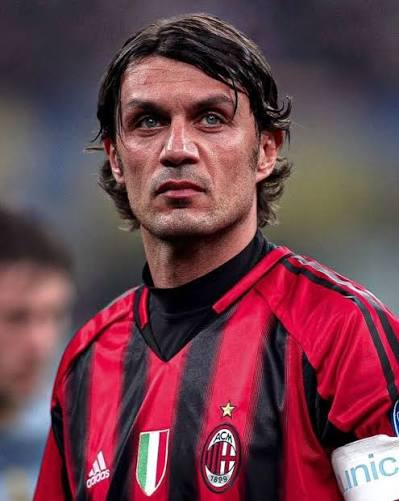

01
Básquetbol
El deporte que más me interesa.
Conoce el deporte que más me gusta, la actividad física que practico y algunos de mis favoritos dentro del mundo deportivo.
El deporte que más disfruto seguir e interesarme.
El deporte que más me interesa.
Una representación visual de mi experiencia y del tiempo que he dedicado a esta actividad.

Tiempo por definir
Dos de mis principales referentes dentro del mundo deportivo.

